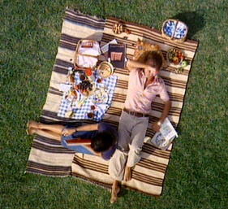

Charles and Ray Eames
“To whom does design address itself: to the greatest number, to the specialist of an enlightened matter, to a privileged social class? Design addresses itself to the need.”
— Charles Eames
Powers of Ten

The film, Powers of Ten, takes us on an adventure in magnitudes. Starting at a picnic by the lakeside in Chicago, this famous film transports us to the outer edges of the universe. Every ten seconds we view the starting point from ten times farther out until our own galaxy is visible only as a speck of light among many others. Returning to Earth with breathtaking speed, we move inward—into the hand of the sleeping picnicker—with ten times more magnification every ten seconds. Our journey ends inside a proton of a carbon atom within a DNA molecule in a white blood cell.
Powers of Ten is a 1968 American documentary short film written and directed by Ray Eames and her husband, Charles Eames, rereleased in 1977. The film depicts the relative scale of the Universe in factors of ten (see also logarithmic scale and order of magnitude). The film is an adaptation of the 1957 book Cosmic View by Kees Boeke, and more recently is the basis of a new book version. Both adaptations, film and book, follow the form of the Boeke original, adding color and photography to the black and white drawings employed by Boeke in his seminal work.
In 1998, "Powers of Ten" was selected for preservation in the United States National Film Registry by the Library of Congress as being “culturally, historically, or aesthetically significant."